A tymczasem w Cameracie...
.
2013-05-01
Wstaliśmy, bo nie było wyjścia, na nasz czas o 06.00, już było śniadanie. Wszyscy zjedli więc pakujemy się do autokaru . Na szczęście pogodę i humory mamy super.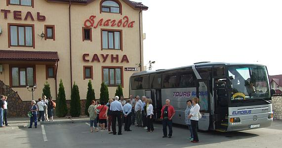
Przed nami jeszcze 660km, ale co tam. Nam zawsze wesoło, więc jedziemy. Panowie jak zawsze poranny wyjazd zaczynają od „Bogurodzicy”.
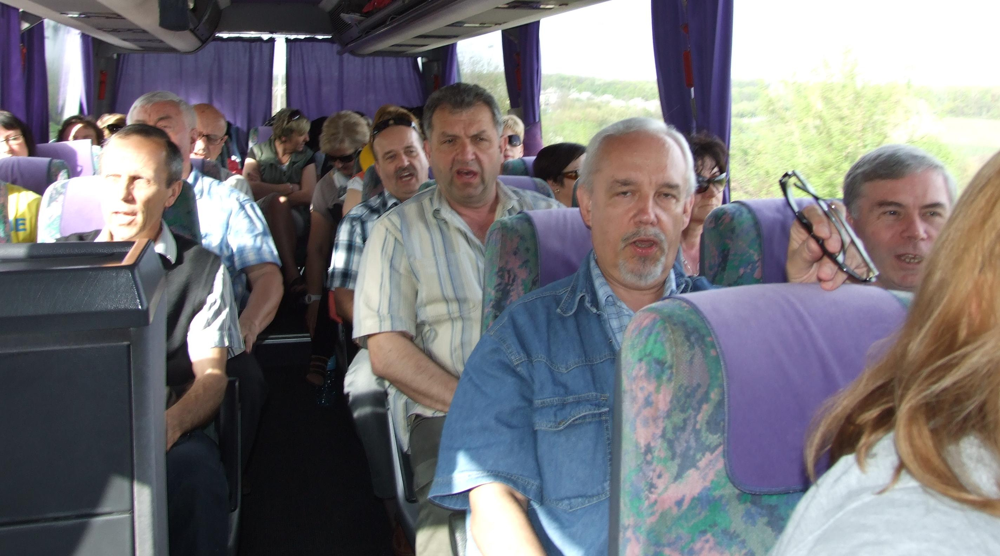 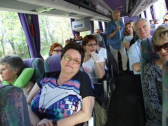 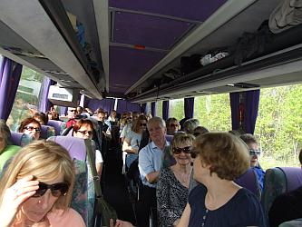
Docieramy po strasznych dziurach w drogach do Międzyboża. Tutaj zwiedzamy zamek-twierdzę.
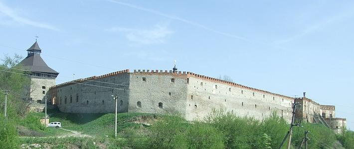
No tak . . .wiadomo . . . panowie
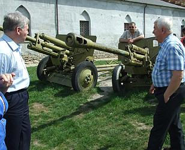 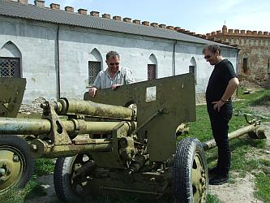
a tymczasem . . . panie.
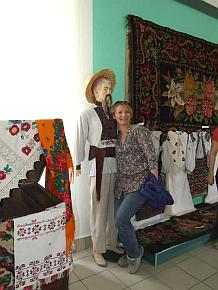 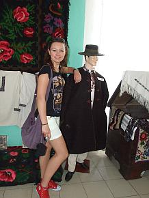 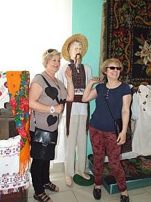 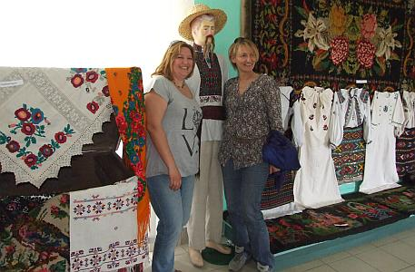
Wychodzimy i jedziemy dalej.
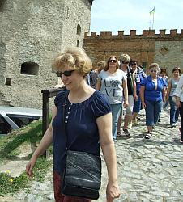
Kolejny przystanek, to Latyczów. Tutaj będziemy śpiewać koncert 04 maja. Dzisiaj zwiedzimy kościół i . . .
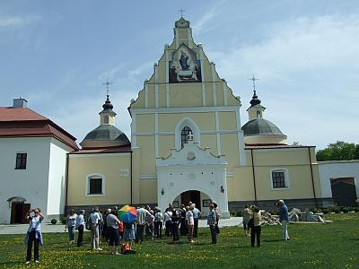
posłuchamy jaka jest akustyka i jak grają instrumenty.
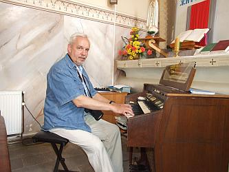 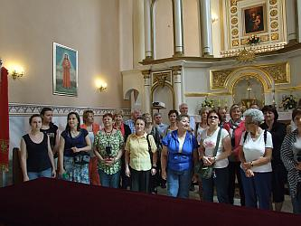
Już wszystko wiemy, pora jechać dalej. Krótki przystanek na obiad w Humaniu.
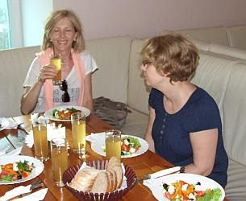 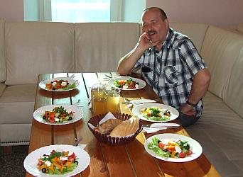
Docieramy do hotelu w Odessie.
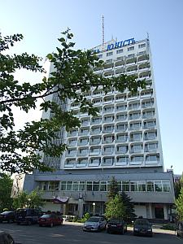

© Stowarzyszenie Muzyczne Chór Camerata Wieliczka
Projekt i wykonanie:  Prowadzenie strony: Małgorzata Wysocka-Cebula
Prowadzenie strony: Małgorzata Wysocka-Cebula